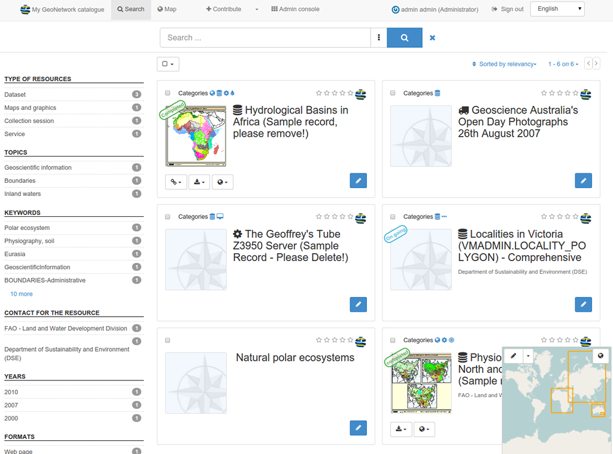

GeoNetwork¶
Catálogo de metadatos¶
GeoNetwork opensource es una aplicación para gestionar catálogos de recursos georreferenciados. Proporciona funciones avanzadas de edición y búsqueda de metadatos, incorpora un visor web de mapas interctivo, y se basa en estándares abiertos.
{kind=link}
Características Principales¶
- Acceso inmediato a la búsqueda de catálogos geoespaciales, tanto locales como distribuidos
- Carga y descarga de datos, gráficos, documentos, PDF y cualquier otro tipo de contenido
- Incorpora un visualizador interactivo de mapas en el que mostrar conjuntamente servicios de mapas procedentes de cualquier lugar del mundo
- Acceso a canales de suscripción RSS y GeoRSS con los últimos cambios realizados en el catálogo de metadatos
- Edición en línea de metadatos, provista de un potente sistema de plantillas
- Soporte nativo de los formatos de metadatos ISO19115/ISO19119/ISO19139/ISO19110, FGDC y Dublin Core
- Operaciones programables de recolección (harvesting) y sincronización de metadatos en catálogos distribuidos. Capaz de comunicarse con: GeoNetwork, CSW, OGC WxS GetCapabilities, Z39.50, WebDav, ArcSDE, Thredds, OGC WFS Features y OAI-PMH
- Control de acceso pormenorizado
- Gestión de grupos y usuarios
- Interfaz de usuario multilingüe
Estándares implementados¶
- Servicio Web de Catálogo (CSW 2.0.2 ISO) de OGC
- Protocolo para la Recolección de Metadatos del Open Archives Initiative (OAI-PMH)
- OpenSearch-Geo
- Estándares de metadatos:
- ISO19115/ISO19119/ISO19139/ISO19110 y perfiles ISO
- Dublin Core
Detalles¶
Sitio Web: http://geonetwork-opensource.org
Licencia: GNU General Public License (GPL) versión 2
Versión: 3.2.1
Plataformas soportadas: Windows, Linux, Mac
Interfaces API: Java
Soporte: http://www.osgeo.org/search_profile
Guía de inicio rápido¶
- Guía de inicio rápido <../quickstart/geonetwork_quickstart>